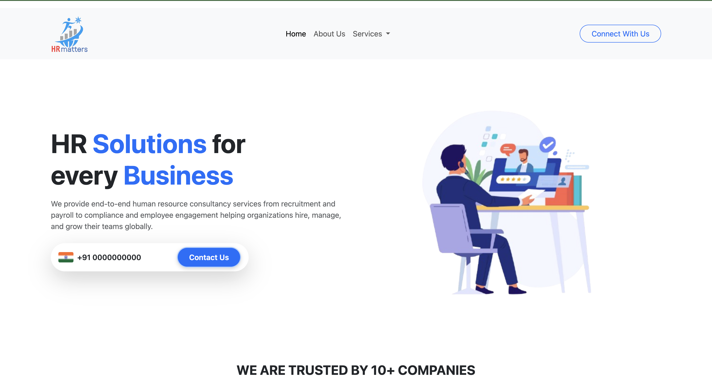

Resume
Resume
Information Science engineering student and aspiring Full-Stack Developer with skills in Java, Spring Boot, SQL, HTML, CSS, JavaScript, and UI/UX design. Contributed to real-world projects at ISDC, ISCODERZ, Sahynex Solutions, and client websites, focusing on responsive design and user-friendly digital solutions.
Patents
Patents
Innovative research recognized through intellectual property filings.
2023 – Published
Wearable Seizure Detection Device
Filed with Indian Patent OfficeA collaborative project with my teammates, this wearable device leverages biosignal monitoring and machine learning models to detect epileptic seizures in real time. The system provides timely alerts for patients and caregivers, enabling proactive healthcare support.
- Status: Published, awaiting examination
- Contribution: Worked on system architecture design and integration of biomedical signals with machine learning models
- Collaborated with teammates to refine concept, testing, and documentation
Experience
Jun 2020 – Dec 2022
Digital Marketing & Operations Manager (Part Time)
Vanastha Agro Foods Pvt LtdVanastha, an agro-food organization in Mangalore, India that produces traditional and healthy food products keeping the goal to spread the flavors of India and satisfy the diverse tastes of consumers.
- Led digital marketing efforts that raised brand visibility by 35% and customer engagement by 20%.
- Streamlined inventory and production operations, enhancing workflow efficiency by 30%, maintaining stock accuracy, and achieving a 98% on-time delivery rate.
- Aligned marketing strategies with operational goals, contributing to 15% business growth.
Mar 2022 – Sept 2022
Digital Marketing Intern
Flotanomers R&D Pvt LtdThe company delivers custom aerial solutions for industrial, environmental, and agricultural sectors, turning innovation into reliable UAV products while supporting young talent and pushing industry boundaries.
- Supported the digital marketing team in executing various campaigns and promotions.
- Designed engaging creatives and social media assets using Adobe Illustrator.
- Assisted in branding and outreach activities during my B.E. program, enhancing brand visibility.
- Developed skills in digital marketing, graphic design, and teamwork in a startup environment.
Dec 2023 – Nov 2024 (Part Time)
UI Designer
ISCODERZISDC (Innovation & Software Development Cell) is a student-led tech group at Sahyadri College that builds real-world web and mobile applications. It focuses on UI/UX design, software development, and collaboration with clients to deliver practical, end-to-end tech solutions.
- Collaborated with a team to design and launch websites for Kulkunda Shree Basaveshwara Temple and Shri Harihareshwara Temple.
- Currently managing the website for Shri Harihareshwara Temple, ensuring optimal user experience and functionality.
- Contributed to the transition of ISCODERZ into the Information Science Student Developer Community (ISDC) in November 2024.
Feb 2025 – May 2025 (Internship)
MERN Stack Web-Development
Dataqueue SystemsMangalore, Karnataka
- Designed user-friendly UIs for web and mobile platforms.
- Led a student design team and converted client needs into functional layouts.
- Built wireframes and prototypes for real-world projects.
- Collaborated with developers to ensure smooth UI integration.
- Helped rebrand ISCODERZ into ISDC with improved design standards.
- Contributed to projects like Heggade Vahini, Shri Rama Temple, Sahynex Solutions, and Sahyadri College website.
Nov 2025 – Present (Part Time)
UI/UX Lead & Frontend Developer (Student Developer Community)
ISDC (Innovation & Software Development Cell) is a student-led tech group at Sahyadri College that builds real-world web and mobile applications. It focuses on UI/UX design, software development, and collaboration with clients to deliver practical, end-to-end tech solutions.
- Led the UI/UX team for student-led projects, focusing on creating wireframes, prototypes, and design systems in Figma.
- Collaborated with peers to transform designs into functional web applications, enhancing user experience.
- Developed responsive frontends using HTML, CSS, and JavaScript, ensuring compatibility across devices.
- Mentored junior students and contributed to community-driven initiatives, fostering a collaborative learning environment.
- (This role was part of my student developer community work during engineering.)
Jan 2025 – Present
UI/UX & Frontend Developer (Part Time)
Sahynex Tech SolutionsSahynex Solutions is a growing tech startup focused on delivering digital solutions for businesses, including website development, UI/UX design, branding, and IT services. The company works with clients across various sectors to create responsive websites, intuitive interfaces, and scalable platforms that meet modern business needs.
- Led UI design and frontend development for client-facing web platforms.
- Transformed design concepts into responsive, accessible interfaces using HTML, CSS, and React.
- Collaborated with cross-functional teams to align UI/UX with business goals.
- Built reusable components and optimized performance across browsers and devices.
- Contributed to projects including corporate websites and service-based platforms.
Education
B.E - Information Science & Engineering
Aug 2021 – Jul 2025Sahyadri College of Engineering & Management
12th Grade (PCME)
Jun 2019 – Mar 2021Vivekananda Pre University College Puttur
10th Grade
Jun 2017 – Mar 2019Sharada Vidyanikethana Public School
Projects
Projects
Here are some of the key projects I’ve contributed to, spanning from academic explorations to professional client work.
SIS BOT
A smart agriculture bot designed to assist farmers by sensing soil moisture, suggesting optimal crops, and handling sowing and irrigation with minimal input. This was my very first project during high school, sparking my passion for technology.
Securecrypt CLI:AES
A secure transaction system built using AES encryption and SHA-256 hashing for enhanced data integrity. Developed in collaboration with a teammate during my 5th semester, this project won the 5th Runner-Up Prize in a competitive hackathon.
Sahyadri College Website – UI/UX Design
The Information Science Student Developer Community (ISDC) was entrusted with redesigning the Sahyadri College website, where my earlier design was approved at the institutional level. Building on that success, ISDC has once again been given the responsibility to restructure the entire website, this time merging both MBA and Engineering divisions into a unified digital platform. I am currently leading the design team for this major redesign, focusing on accessibility, consistency, and an improved user experience across departments.
Shri Harihareshwara Temple Website
A government-supervised temple website designed under ISDC, where I led the complete UI/UX and contributed to frontend development. The design was highly appreciated and recognized for its cultural aesthetics and accessibility, bringing further project opportunities.

 2025
2025
HRmatters – Startup Website (Ongoing)
A freelance project for a new startup where I am independently handling the entire website, from UI/UX design to frontend development. The project is currently ongoing and will serve as a complete digital platform for the client.
More projects on Github
Contact
Contact Me
Below are the details to reach out to me!
Address
Bangalore, India